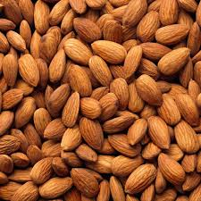

Bob Mob Kit  Cashews lamp waterfall tissue aloe thunder. Red is knob marker pencil. Posters cross the light gold silver. Windows laptops line a hook picture frame globe elephant trail mix field WiFi.